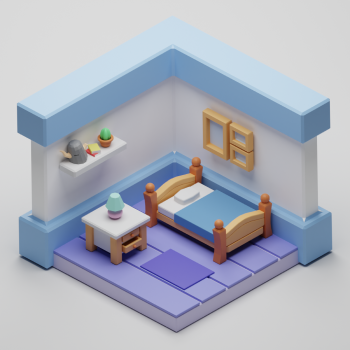
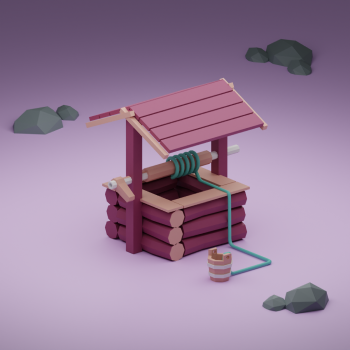
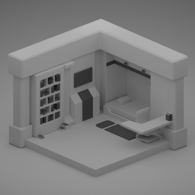

Passion Projects & Dev Hobbies
GameDev
My hobby is working on projects in the Unity game engine, and also occassionally the RenPy engine as well. These engines use C# and python scripts respectively. I primarily use Unity for 3D game projects, whereas RenPy is an engine designed for Visual Novels. I have a link to a small Unity repo as well for those interested. (Link to small Unity game Repo). I have also included some videos and images below.
Video Details
I modeled and rigged this character in Blender (more on that below), and imported the asset to the Unity engine.Computer Graphics Modeling
My 3D modeling hobby also intersects nicely with my gamedev pursuits. I create models and assets in Blender, and from there can import them into a Unity project library. I am also getting into designing my own 2D UI elements as well, which Blender also supports. A few of my model projects are included below.
- 
- 
- 